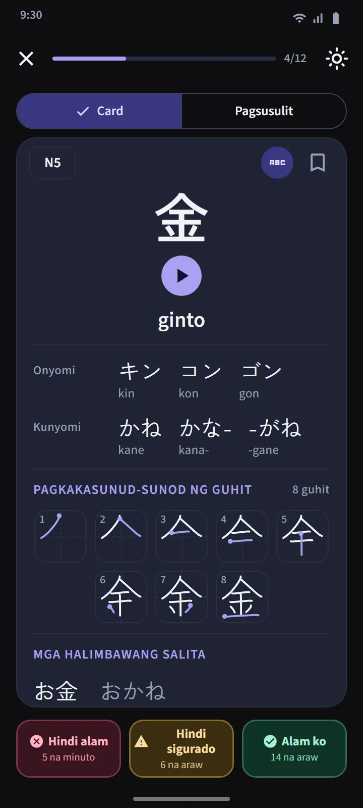
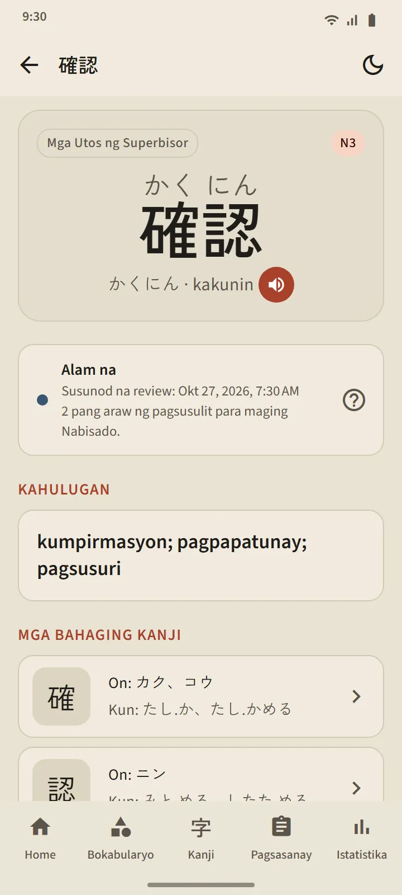
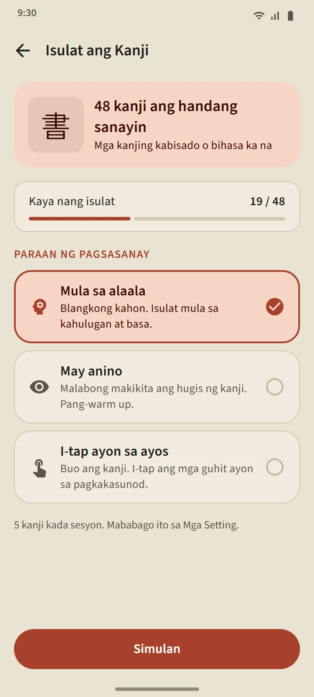

Mga set ng 25 kanji ayon sa pagkakasunod-sunod sa mga paaralan sa Japan
Hinahati ang tab na Kanji ayon sa antas ng JLPT, at saka sa mga set na may mga 25 kanji. Sa loob ng isang antas, sinusunod ang kurikulum ng mga paaralan sa Japan (unang baitang muna), saka ang bilang ng stroke mula sa pinakakaunti; pinananatiling magkakasunod ang mga pangkat na magkakaugnay, gaya ng mga numero, pangalan ng mga araw sa isang linggo, at mga panahon ng taon. Ipinapakita ng bawat set sa listahan ang mga kanji nito, isang progress bar, ang bilang ng alam na at nabisado, at label na "Handa nang pagsusulit" o ang bilang ng due.
| Antas | Kanji | Access |
|---|---|---|
| N5 | 103 | Libre |
| N4 | 181 | Libre |
| N3 | 370 | Premium |
| N2 | 369 | Premium |
| N1 | 1,207 | Premium |


Mga kanji card at pagsusulit
Ang kanji lang ang nasa harap ng card. Sa likod: mga kahulugan, pagbasang On at Kun (may romaji kung gusto mo), isang stroke-order diagram na may isang frame bawat stroke at may marka ang panimulang punto, at mga halimbawang salitang gumagamit nito. Ang parehong tatlong button gaya ng sa mga card ng bokabularyo ang nagre-reschedule nito.
Bumubukas ang pagsusulit ng isang set sa 10 kanji na Alam na o Nabisado, na may tatlong uri ng tanong: kanji papunta sa kahulugan, kahulugan papunta sa kanji, at kanji papunta sa pagbasa. Pareho ang tuntunin ng Nabisado: tama sa pagsusulit sa tatlong magkakaibang araw. Ang Review ng kanji sa itaas ng tab ay nagtitipon ng bawat kanji na due mula sa bawat set, at sinusubok ng halong pagsusulit ang iba't ibang set.


Detalye ng kanji at mga espesyal na deck
Taglay ng detail page ng bawat kanji ang mga kahulugan, yugto at susunod na review, mga pagbasa, stroke diagram, at mga halimbawang salita; may link ang detail page ng isang salita papunta sa mga bumubuo nitong kanji. Tulad ng bokabularyo, may mga deck na Naka-bookmark, Mahihirap na kanji, at 60-segundong blitz ang kanji, at ang isang switch sa seksyon ng mabilis na pagsasanay ng home screen ay nagpapalit sa apat nitong tile para maging mga bersyon ng kanji.


Isulat ang kanji gamit ang daliri mo
Puwedeng sanayin sa pagsulat ang mga kanji na Alam na o Nabisado mo na: kahulugan at mga pagbasa lang ang ipinapakita, susulat ka ng isa-isang stroke, at sinusuri ang bawat stroke sa hugis, direksyon, at pagkakasunod-sunod, nang offline. May tatlong mode: Mula sa alaala, May anino, at I-tap ayon sa ayos. Itinuturing na "kaya nang isulat" ang isang kanji kapag naisulat mo ito mula sa alaala nang walang tulong sa dalawang magkaibang araw.


Mga pinagmulan ng data
Ang mga kahulugan at pagbasa ay mula sa KANJIDIC (Electronic Dictionary Research and Development Group) at ang stroke order ay mula sa KanjiVG, parehong may lisensyang CC BY-SA. Tantiya lang ang mga antas ng kanji batay sa lumang mga listahan ng JLPT; hindi naglalathala ng opisyal na listahan ng kanji ang kasalukuyang JLPT.